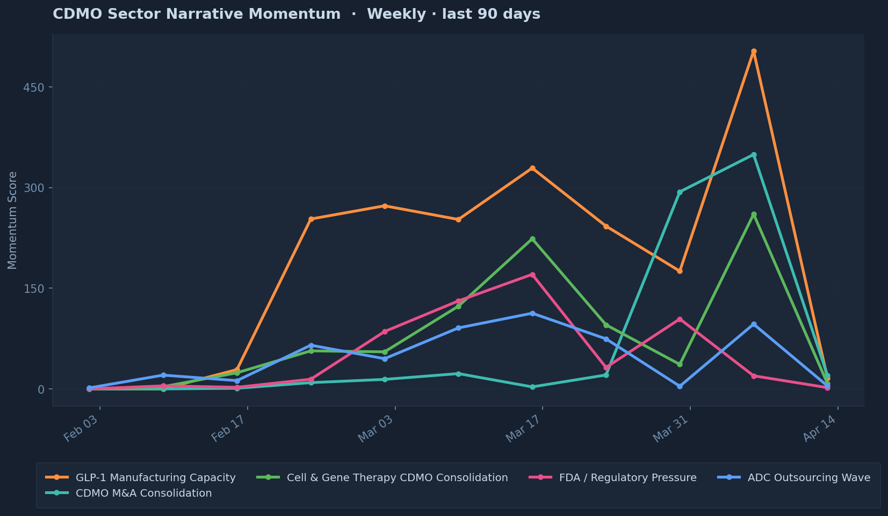

30 days
tracked
alerts active
tracked

Each line tracks one sector narrative — 7-day rolling average of signal volume and cross-source breadth, updated daily.
Mantis runs continuously — ingesting signals, scoring convergence, and tracking whether its predictions come true. It does not summarise headlines. It identifies when independent data sources start moving in the same direction on the same company, and asks what that combination of evidence implies.
Mantis Intelligence is not authorised or regulated by the Financial Conduct Authority or any other financial regulator. Content is produced by automated systems and artificial intelligence for information and research purposes only. Nothing on this site constitutes investment advice, a personal recommendation, or a solicitation. Past signal patterns are not predictive of future events or outcomes.